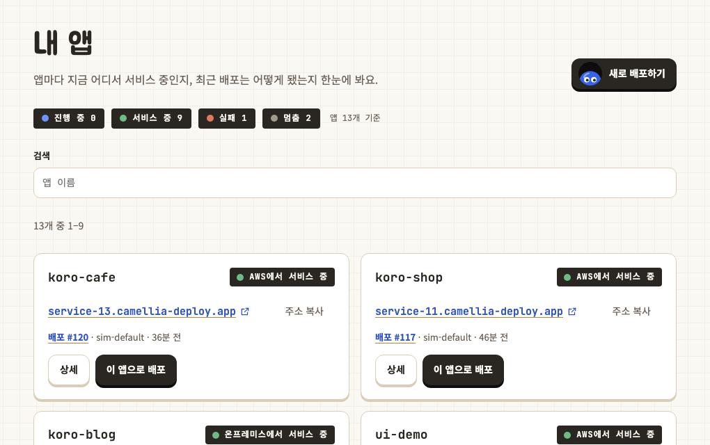
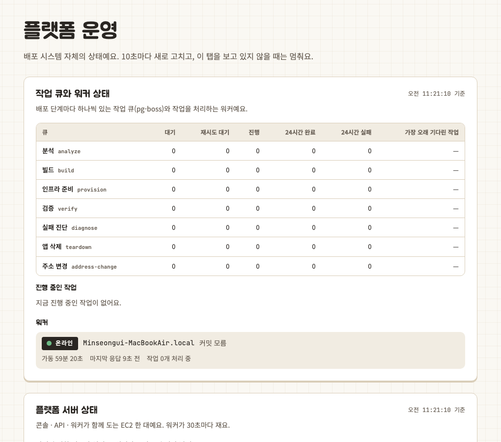

09 · 실제 배포 검증
배포 시나리오로 전환과 복구를 확인했습니다
화면이나 단위 테스트만 확인하지 않고 실제 이미지를 배포했습니다. 정상 배포, AWS·온프레미스 전환, 중복 요청, 새 환경 실패와 Agent 중단을 포함한 13개 사용자 시나리오를 반복했습니다.
검증 결과
| 항목 | 결과 |
|---|---|
| 시나리오 / 반복 | 13개 / 35회 |
| 요청 / 실제 배포 | 64건 / 61회 |
| 예상 결과 일치 | 60 / 61 |
| Public health | 20 / 20 성공 · p95 144ms |
| AWS 동일 이미지 재배포 | 중앙값 20.32초 |
| On-Prem 동일 이미지 재배포 | 중앙값 19.91초 |
| AWS ↔ On-Prem 전환 | 6 / 6 성공 · 동일 linux/amd64 digest |
동시 요청 제어
- 서로 다른 프로젝트 5개 동시 배포: 10 / 10 성공
- 같은 프로젝트의 중복 배포: 하나만 실행하고 나머지는 409 응답
- 테스트 종료 후 남은 배포 잠금: 0
기존 서비스 보호
- 새 환경 검증 실패 3건 모두 완료 처리하지 않음
- 새 환경이 실패하는 동안 기존 서비스는 HTTP 200 유지
- Agent 중단 시 장애 감지, 재시작 후 HTTP 200 복구
운영 화면


61회의 실제 배포 중 60회가 예상 결과와 일치했습니다. 온프레미스 동시 배포 한 건은 DNS 문제로 실패했으며, 실패 조건과 기존 서비스 보호 여부까지 함께 기록했습니다.